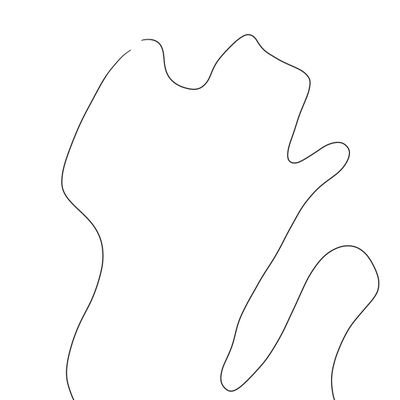

𝑬𝒑𝒉𝒆𝒊𝒂
@Epheiamoe
@TransYuwen @wxw2014371
你可以以「要活着」把她送精卫，那家长就可以以「要健康」或其他理由把任何跨性别送扭转。

闭梦网
@CLK5601
哈哈，如果是为了17“好”，干脆一步到位，进行脑叶切除手术好了 https://t.co/fiKuUfpp7y
𝑬𝒑𝒉𝒆𝒊𝒂
@Epheiamoe
@TransYuwen @wxw2014371 我就说白了。我认为送精卫比死了更不好。